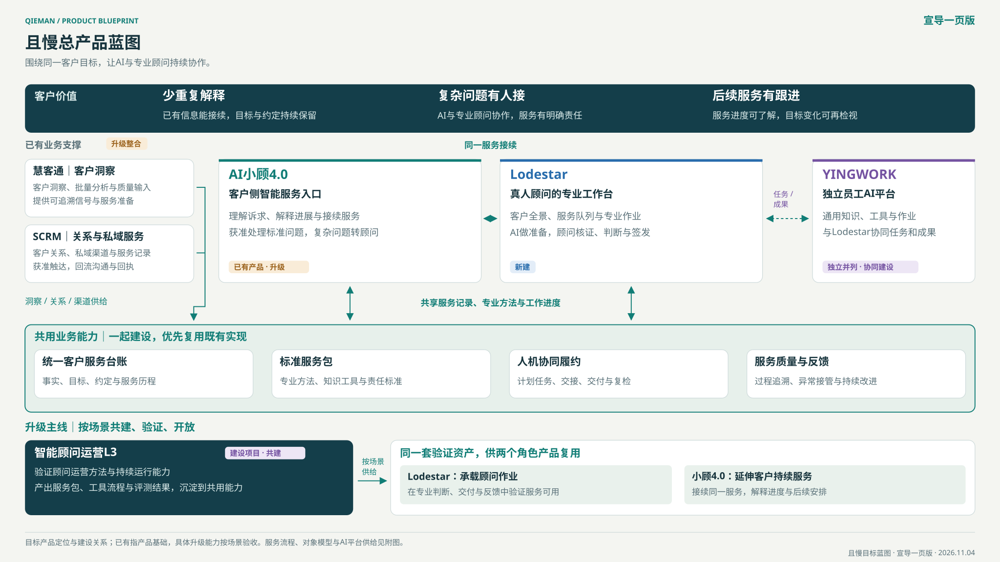

且慢总产品蓝图
客户价值在上，角色产品居中，共用能力打底；L3逐场景沉淀验证资产，支撑顾问工作台建设与客户AI服务升级。


已有、升级、新建标注针对产品基础及目标建设；共建是协作方式。主图表达目标关系，具体能力按场景验收。
附图｜需要展开时再看
详细流程、对象模型、AI供给和建设切片保留为附图。查看行业研究与原件依据 ↗
客户价值在上，角色产品居中，共用能力打底；L3逐场景沉淀验证资产，支撑顾问工作台建设与客户AI服务升级。

详细流程、对象模型、AI供给和建设切片保留为附图。查看行业研究与原件依据 ↗